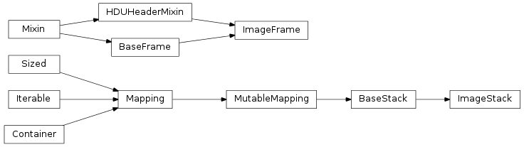

Stacks and frames for manipulating and managing images. Images are simply defined as a two-dimensional numpy array. Image stacks have two special methods, ImageStack.loadFromFile() and ImageStack.show3D().
To understand IRAF integration of this module, see the methods provided by iraftools, including UseIRAFTools().

This object tracks a number of data frames. This class is a simple subclass of AstroObjectBase.BaseStack and usese all of the special methods implemented in that base class. This object sets up an image object class which has two special features. First, it uses only the ImageFrame class for data. As well, it accepts an array in the initializer that will be saved immediately.
This function can be used to load an image file (but not a FITS file) into this image frame. Image files should be formats accepatble to the Python Image Library, but that generally applies to most common image formats, such as .png and .jpg . This method takes a filename and a statename parameter. If either is not given, they will be generated using sensible defaults.
Clears all states from this object. Returns an empty list representing the currently known states.
| Parameters: | delete (bool) – whether to explicitly delete states or just stop referencing dictionary. |
|---|---|
| Returns: | list of states remaining |
The data for the selected FITS frame.
Returns the raw data for the current state. This is done through the FITSFrame.__call__() method, which should return basic data in as raw a form as possible. The purpose of this call is to allow the user get at the most recent piece of data as easily as possible.
| Parameters: |
|
|---|---|
| Returns: | np.array of called data |
Warning
I have not finished examining some issues with referencing vs. copying data that comes out of this call. Be aware that manipulating some objects produced here may actually manipulate the version saved in the Object. The current implementation which protects this call relies on the numpy copy command, np.copy(state()), which might fail when used with data objects that do not return numpy arrays.
The selected FITS frame. This frame is usually the last modified frame in the system.
Returns the FITSFrame Specfied. This method give you the raw frame object to play with, and can be useful for transferring frames around, or if your API is built to work with frames rather than raw data.
| Parameters: | statename (string) – the name of the state to be retrieved. |
|---|---|
| Returns: | dataClass instance for this object |
Warning
Unlike with the BaseStack.data() call, the object returned here should be treated as roughly immutable. That is, it is not advisable to re-use the data frame here, as Python has returned a reference to all examples of this data frame in your code:
>>> obj = BaseStack()
>>> obj.save(FITSFrame(None,"Label"))
>>> Frame = obj.frame()
>>> Frame.label = "Other"
>>> obj.frame().label
"Other"
Note
Using frames can be advantageous as you don’t rely on the Object to guess what type of frame should be used. Most times, the object will guess correctly, but Frames are a more robust way of ensuring type consistency
Read an atfile into this object. The name of the atfile can include a starting “@” which is stripped. The file is then loaded, and each line is assumed to contain a single fully-qualified part-name.
Retrun a new object created from a filename. This method is a shortcut factory for read().
>>> obj = BaseStack.fromFile("SomeImage.fits")
>>> obj.list()
["SomeImage","SomeImage Frame 1","SomeImage Frame 2"]
Removes all states except the specified frame(s) in the object.
| Parameters: |
|
|---|---|
| Returns: | list of states remaining. |
Provides a list of the available frames, by label.
| Returns: | list |
|---|
This reader takes a FITS file, and trys to render each HDU within that FITS file as a frame in this Object. As such, it might read multiple frames. This method will return a list of Frames that it read. It uses the dataClasses FITSFrame.__read__() method to return a valid Frame object for each HDU.
>>> obj = BaseStack()
>>> obj.read("SomeImage.fits")
>>> obj.list()
["SomeImage","SomeImage Frame 1","SomeImage Frame 2"]
Removes the specified frame(s) from the object.
| Parameters: |
|
|---|---|
| Returns: | list of states remaining. |
Saves the given data to this object. If the data is an instance of one of the acceptable dataClasses then this method will simply save the data. Otherwise, it will attempt to cast the data into one of the acceptable dataClasses using their __save__() mehtod.
| Parameters: |
|
|---|---|
| Raises : | TypeError when the data cannot be cast as any dataClass |
| Raises : | KeyError when the data would overwrite an existing frame. |
Sets the default frame to the given statename. Normally, the default frame is the one that was last saved.
| Parameters: | statename (string) – the name of the state to be selected. |
|---|
Returns the (rendered) matplotlib plot for this object. This is a quick way to view your current data state without doing any serious plotting work. This aims for the sensible defaults philosophy, if you don’t like what you get, write a new method that uses the data() call and plots that.
| Parameters: | statename (string) – the name of the state to be retrieved. |
|---|
Writes a FITS file for this object. Generally, the FITS file will include all frames curretnly available in the system. If you specify states then only those states will be used. primaryState should be the state of the front HDU. When not specified, the latest state will be used. It uses the dataClasses FITSFrame.__hdu__() method to return a valid HDU object for each Frame.
| Parameters: |
|
|---|
A single frame of a FITS image. Frames are known as Header Data Units, or HDUs when written to a FITS file. This frame accepts (generally) 2-dimensional numpy arrays (ndarray), and will show those arrays as images. Currently, the system makes no attempt to ensure/check the data type of your data arrays. As such, data saved will often be saved as np.float rather than more compact data types such as np.int16. Pyfits handles the typing of your data automatically, so saving an array with the correct type will generate the proper FITS file. This object requires array, the data, a label, and can optionally take headers and metadata.
Retruns an HDU which represents this frame. HDUs are either pyfits.PrimaryHDU or pyfits.ImageHDU depending on the primary keyword.
Plots the image in this frame using matplotlib’s imshow function. The color map is set to an inverted binary, as is often useful when looking at astronomical images. The figure object is returned, and can be manipulated further.
Note
This function serves as a quick view of the current state of the frame. It is not intended for robust plotting support, as that can be easily accomplished using matplotlib. Rather, it attempts to do the minimum possible to create an acceptable image for immediate inspection.
Attempts to create a ImageFrame object from the provided data. This requres some type checking to ensure that the provided data meets the general sense of such an image. If the data does not appear to be correct, this method will raise an NotImplementedError with a message describing why the data did not validate. Generally, this error will be intercepted by the caller, and simply provides an indication that this is not the right class for a particular piece of data.
If the data is saved successfully, this method will return an object of type ImageFrame
The validation requires that the data be a type numpy.ndarray and that the data have 2 and only 2 dimensions.
Attempts to convert a given HDU into an object of type ImageFrame. This method is similar to the __save__() method, but instead of taking data as input, it takes a full HDU. The use of a full HDU allows this method to check for the correct type of HDU, and to gather header information from the HDU. When reading data from a FITS file, this is the prefered method to initialize a new frame.